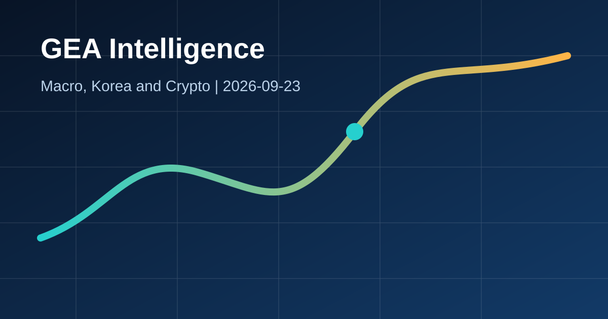

Daily Economy Briefing
미국·일본 금리 인상과 고유가, 한국 경제에 미치는 영향

30초 요약
- 연준은 기준금리를 3.75~4.00%로 0.25%포인트 올렸고, 일본은행도 9월 24일부터 정책금리를 1.25%로 높입니다.
- IEA의 9월 보고서 작성 시점 브렌트유 선물은 배럴당 105달러였습니다. 금리와 에너지가 동시에 오르면 세계 경기의 부담이 커집니다.
- 한국은 기준금리 3.00%와 반도체 수출 호조가 버팀목이지만, 원/달러 1,356.15원과 수입물가 경로를 함께 봐야 합니다.
왜 지금 중요한가?
2025년의 완화 기대와 달리 주요 중앙은행이 다시 물가 방어에 무게를 두고 있습니다. 고유가가 물가 기대를 자극하면 국채금리와 달러가 높은 수준을 유지하고, 주식과 암호화폐의 할인율도 올라갑니다.
글로벌 이슈 1: 연준의 긴축 재개
사실: 연준은 9월 16일 연방기금금리 목표범위를 3.75~4.00%로 인상했습니다. 경제활동과 국내지출은 견조하지만 물가는 여전히 높다고 평가했습니다.
영향: 미국 단기금리 상승은 국채금리와 달러를 통해 세계 금융여건을 긴축시킵니다. 성장주, 장기채, 암호화폐처럼 미래 현금흐름이나 유동성에 민감한 자산은 변동성이 커질 수 있습니다.
글로벌 이슈 2: 일본은행과 에너지 충격
사실: 일본은행은 7대2로 익일물 금리를 1.25%로 올렸고 추가 정상화 가능성을 열어뒀습니다. IEA는 9월 보고서에서 브렌트유 선물이 105달러였다고 기록했습니다.
영향: 일본 금리 상승은 엔화와 글로벌 채권 자금흐름을 바꿀 수 있습니다. 고유가는 운송비와 제조 원가를 높여 중앙은행의 금리 인하 여지를 줄입니다.
한국 이슈: 수출 버팀목과 금리·환율 부담
사실: 한국은행 기준금리는 3.00%이며 9월 통화신용정책보고서는 물가가 상당기간 목표를 웃돌 수 있다고 봤습니다. 8월 반도체 수출은 466.5억달러로 역대 최대였습니다.
해석: 반도체 수출은 성장과 원화에 긍정적이지만, 원화 약세와 고유가가 겹치면 수입물가와 기업 원가가 올라 내수 회복을 제약할 수 있습니다.
시장 연결 경로
추가 긴축 기대가 오르면 장기금리도 압력을 받아 주식과 암호화폐의 가치평가 부담이 커집니다.
강달러는 원화 환산 수입비용을 높입니다. 9월 22일 기준 참조 환율은 달러당 1,356.15원입니다.
금은 지정학 위험의 방어 수요와 높은 실질금리 부담이 충돌합니다. 유가는 물가와 무역수지를 통해 한국에 직접 영향을 줍니다.
위험선호 회복은 호재지만 높은 금리와 에너지 비용은 할인율과 기업 마진을 동시에 압박합니다.
다음 확인 포인트
- 미국 물가·고용과 2년·10년 국채금리
- 브렌트유와 정제마진, 호르무즈 수송 상황
- 한국 9월 수출, 원/달러, 수입물가와 소비심리
관련 글: 오늘의 Crypto Intelligence · 원/달러 환율 영향 · 한국 수출 사이클